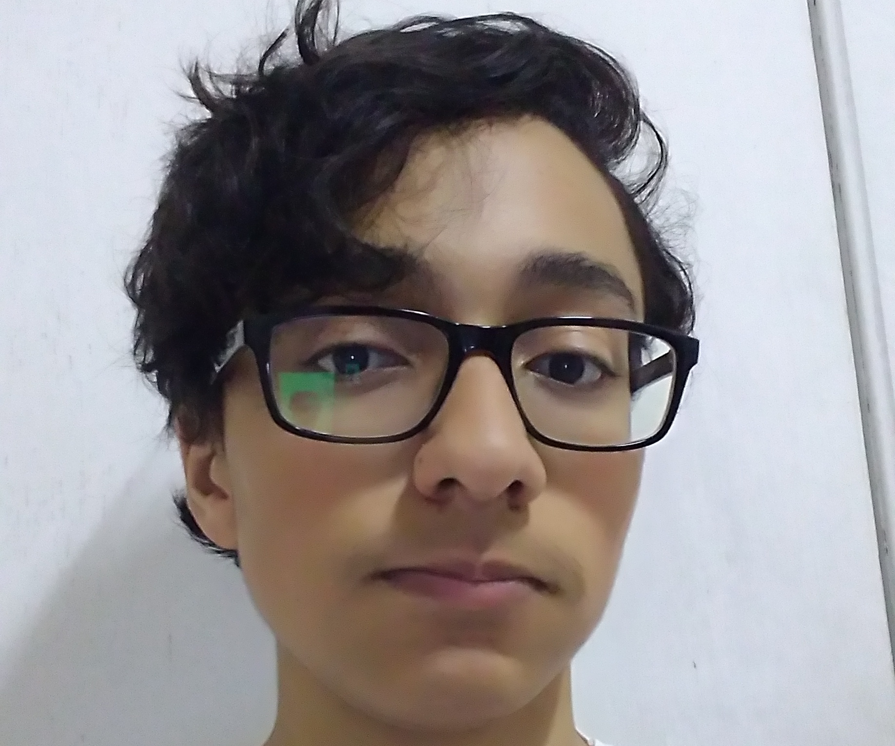
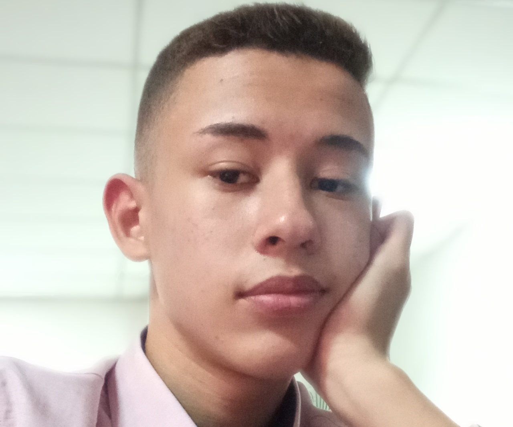
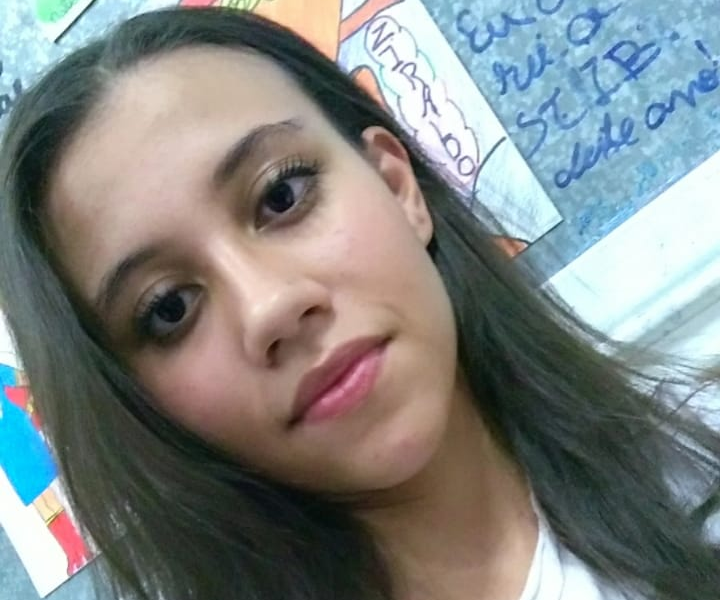

Felipe Fernandes
Trabalhou no projeto em:
✩ Desenvolvimento WEB (front end);
✩ Programa Lazy Moon (back end);
✩ Estruturamento funcional de todo o projeto.
Contato: felipefernandesgsc@gmail.com

Felipe Santana
Trabalhou no projeto em:
✩ Documentação;
✩ Relações públicas.
Contato: f.santana.oliveira41@gmail.com

Gabriel Viana
Trabalhou no projeto em:
✩ Programa Lazy Moon (back end);
✩ Aplicações do sistema em rede;
✩ Design de Imagens.
Contato: 4463gabriel@gmail.com

Taís Klingstron
Trabalhou no projeto em:
✩ Auxílio na montagem da rede
Contato: taisklingstron@gmail.com